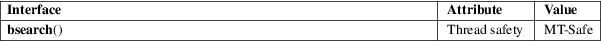

bsearch − binary search of a sorted array
Standard C library (libc, −lc)
#include <stdlib.h>
void
*bsearch(const void key[.size],
const void base[.size *
.nmemb],
size_t nmemb, size_t size,
int (*compar)(const void
[.size], const void
[.size]));
The bsearch() function searches an array of nmemb objects, the initial member of which is pointed to by base, for a member that matches the object pointed to by key. The size of each member of the array is specified by size.
The contents of the array should be in ascending sorted order according to the comparison function referenced by compar. The compar routine is expected to have two arguments which point to the key object and to an array member, in that order, and should return an integer less than, equal to, or greater than zero if the key object is found, respectively, to be less than, to match, or be greater than the array member.
The bsearch() function returns a pointer to a matching member of the array, or NULL if no match is found. If there are multiple elements that match the key, the element returned is unspecified.
For an explanation of the terms used in this section, see attributes(7).

C11, POSIX.1-2008.
POSIX.1-2001, C89, C99, SVr4, 4.3BSD.
The example below first sorts an array of structures using qsort(3), then retrieves desired elements using bsearch().
#include
<stdio.h>
#include <stdlib.h>
#include <string.h>
#define ARRAY_SIZE(arr) (sizeof((arr)) / sizeof((arr)[0]))
struct mi {
int nr;
const char *name;
};
static struct
mi months[] = {
{ 1, "jan" }, { 2, "feb" }, { 3,
"mar" }, { 4, "apr" },
{ 5, "may" }, { 6, "jun" }, { 7,
"jul" }, { 8, "aug" },
{ 9, "sep" }, {10, "oct" }, {11,
"nov" }, {12, "dec" }
};
static int
compmi(const void *m1, const void *m2)
{
const struct mi *mi1 = m1;
const struct mi *mi2 = m2;
return
strcmp(mi1−>name, mi2−>name);
}
int
main(int argc, char *argv[])
{
qsort(months, ARRAY_SIZE(months), sizeof(months[0]),
compmi);
for (size_t i = 1; i < argc; i++) {
struct mi key;
struct mi *res;
key.name =
argv[i];
res = bsearch(&key, months, ARRAY_SIZE(months),
sizeof(months[0]), compmi);
if (res == NULL)
printf("'%s': unknown month\n", argv[i]);
else
printf("%s: month #%d\n", res−>name,
res−>nr);
}
exit(EXIT_SUCCESS);
}
hsearch(3), lsearch(3), qsort(3), tsearch(3)